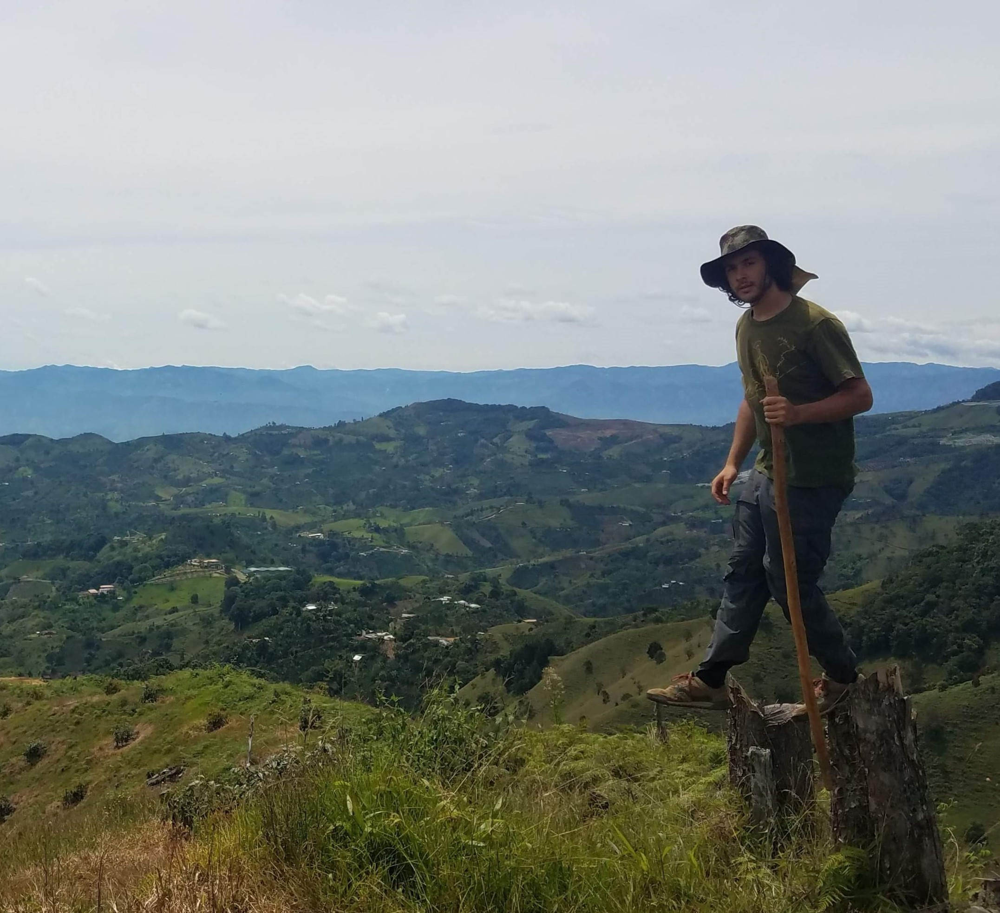

Ben Machlin
Hello, I am Ben. I love to do a lot of things! You may be interested in my skills as a computer science engineer, projects I've worked on, or my experience. You can find some drawings and other stuff in the art section.
I have a computer science master's degree (2019) and bachelor's degree (2018 with Music Engineering minor) from Tufts University. I began working at Alarm.com in August 2019 as a Software Engineer. I have experience and interest in many fields of computer science such as AI/ML, NLP, visualization, computation theory, complex networks, and recommendation. I also am interested in opportunities involving music (and MIR), installations, film, and visual art!